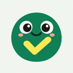
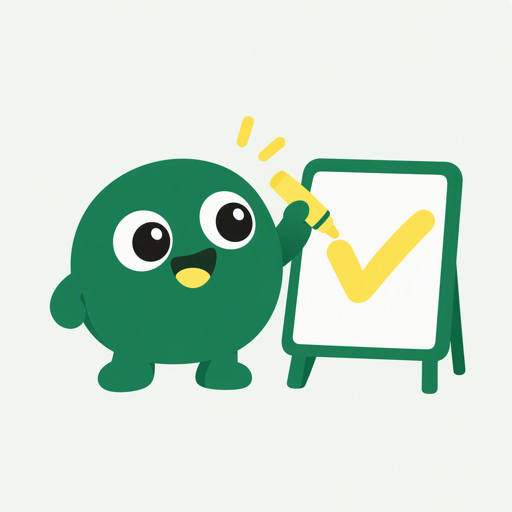
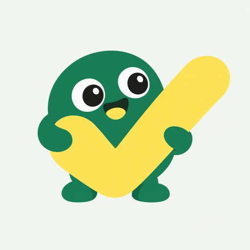
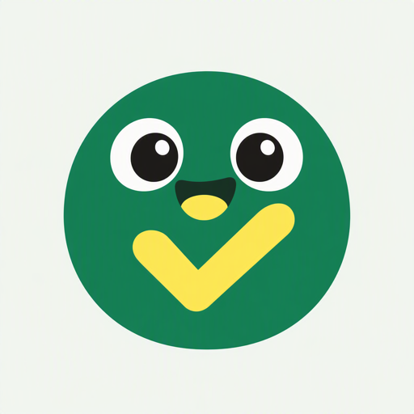

头像延续原型的「白板 + 荧光笔 + 手写勾」语言；简介按微信搜索权重布局：功能词前置、场景词补齐、名词少动词多。
绿底 = 原型主色，白板 = 群协作的载体；荧光黄的手写大勾 = 「定了/我有空」的收口动作，是全产品最强的视觉记忆点；缩到 40px 时只保留「绿底 + 黄勾」两元素，群列表里依然醒目。
白底 + 绿勾 + 右上角荧光黄圆点：更清爽，但群聊深色列表里对比弱于绿底版；建议 A/B 只做一次测试，主推绿底。

144px
备选 A · 白板画勾（适合启动页/分享卡插图）
备选 B · 抱住大勾（动作感强，脸会被挡）
备选 C · 张嘴版（对比后被定稿替换）为什么定稿选它：只保留「墨绿圆球 + 荧光黄对勾 + 一双大眼」三个符号——缩到 40px（微信群聊里的实际尺寸）时，色彩块面依然成立，不会糊成一团；微笑弧线加淡腮红负责「呆萌」，对勾负责「事定了」的品牌记忆；白板、马克笔、四肢全部砍掉，因为它们的细节在小尺寸下只会变成噪声。备选 A 细节丰富，适合做启动页插画或分享卡配图，与主头像构成同一形象的不同场景用法。
群投票凑时间，活动分工搭把手，群日历留记录。点开卡片就能投，不用登录不用打字。
约球约饭不用刷屏：发起投票发到群里，大家点一下就有空时间，自动找出最多人有空的一天。
群投票、凑时间、聚会定时间、活动分工接龙、报名收集、群日历，一个群里的事全搞定。
| 组合 | 名称 | 简介开头 10 字 | 适配头像 | 适用判断 |
|---|---|---|---|---|
| A（主推） | 投票好商量 | 群投票凑时间，活动分工… | 呆萌小球怪 | 长期品牌 + 搜索均衡 |
| B | 咦投票 | 约球约饭不用刷屏：发起投票… | 呆萌小球怪 | MVP 期主攻投票传播 |
| C | 投票一起定 | 群投票、凑时间、聚会定时间… | 呆萌小球怪 | 关键词密度优先 |
三种组合共用同一只「呆萌小球怪」头像，避免改名后重做品牌资产；微信头像上传需 144×144 以上的 PNG/JPG，直接使用 avatar-export/preview-v4-144.png 即可，原始 512px 源文件为 avatar-export/avatar-ai-v4.png。